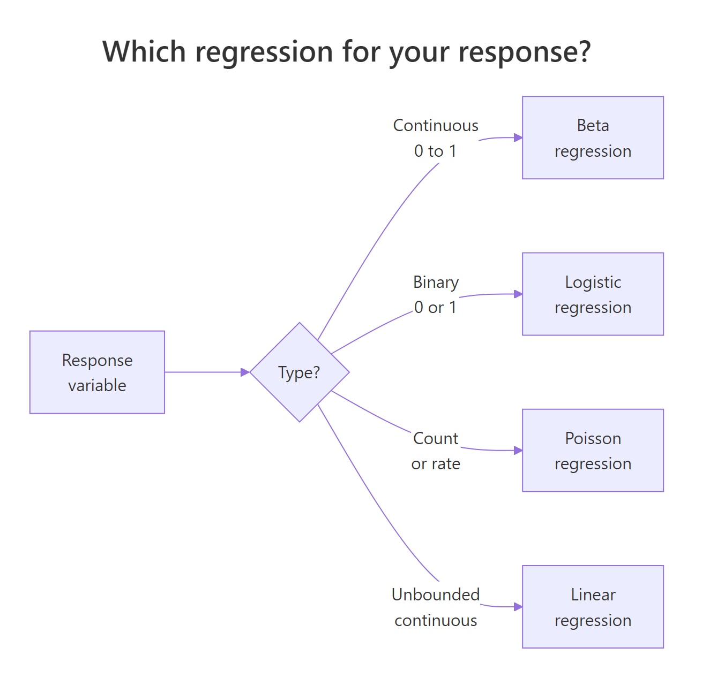
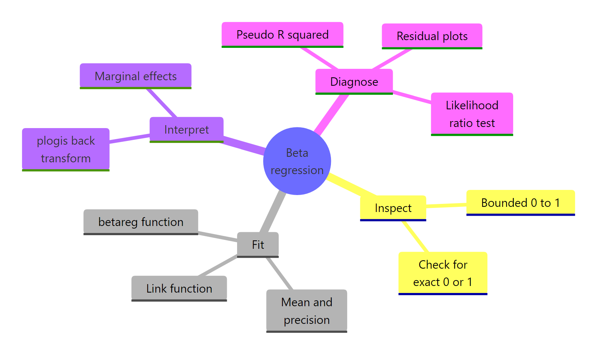

Beta Regression in R: betareg Package for Proportions & Rates
Beta regression models continuous outcomes bounded between 0 and 1, such as proportions, percentages, and rates, using a beta distribution and link functions. The betareg package fits these models with a formula interface similar to lm().
When should you use beta regression instead of linear or logistic regression?
Proportions, yields, and rates often look like they should fit in a linear model, yet they refuse to cooperate. Predictions leak below 0 and above 1, variance shrinks near the edges, and residuals fan out. Beta regression solves this by modelling the response as a draw from a beta distribution, a flexible shape that lives strictly inside (0, 1). Here is the payoff on Prater's gasoline yield data.
The response yield is the fraction of crude oil converted to gasoline after distillation, a clean (0, 1) proportion. The summary has two blocks: the mean model with a logit link (the fraction itself) and a precision model that controls how tightly observations cluster around the mean. A pseudo R² of 0.96 tells you temperature and batch explain almost all of the variation in yield.

Figure 1: A decision guide for choosing between linear, logistic, and beta regression based on the response variable.
Linear regression is the wrong tool here because it happily predicts a yield of 1.2 or −0.1 when extrapolating. Logistic regression is also wrong, even though it uses the same logit link, because it assumes the outcome is Bernoulli (a yes/no count out of trials), not a continuous fraction.
Try it: Refit the same model with a probit link instead of logit and print the summary. Which link gives a higher pseudo R²?
Click to reveal solution
Explanation: The probit link uses the normal CDF instead of the logistic CDF. Results are usually very close to the logit fit because the two link functions only differ meaningfully in the tails. Pseudo R² moves by less than a percentage point.
How does the beta distribution parameterize mean and precision?
The classic beta distribution has two shape parameters, α and β. That is fine for probability theory but awkward for regression, because neither α nor β is what a modeller actually cares about. betareg reparameterizes using the mean μ and a precision φ, so you can model the average directly and describe the spread separately.
The variance depends on both:
$$\text{Var}(y) = \frac{\mu(1 - \mu)}{1 + \phi}$$
Where:
- $\mu$ = the mean of $y$ (a value between 0 and 1)
- $\phi$ = the precision (larger φ means a tighter distribution around μ)
- $\mu(1-\mu)$ = the familiar Bernoulli-style variance term that peaks at μ = 0.5
The intuition is simple. Precision is the opposite of variance. Crank φ up and the distribution collapses toward its mean. Crank it down and it spreads out toward the edges. The next block shows this directly.
Three curves, three stories. The purple curve at μ = 0.5 with low precision is almost flat, proportions sprawl across the whole range. The blue curve at the same mean but high precision spikes sharply at 0.5. The red curve shifts the mean to 0.2 and shows how μ controls location while φ controls spread.
Try it: Draw two beta densities on the same plot: one with μ = 0.3, φ = 5, and another with μ = 0.3, φ = 20. Same mean, different precision.
Click to reveal solution
Explanation: Both densities peak near 0.3 because μ is fixed. The φ = 20 curve is much taller and narrower, showing that higher precision concentrates the probability mass around the mean.
How do you interpret betareg() coefficients on the logit scale?
betareg() reports its mean-model coefficients on the link scale, not the response scale. With the default logit link, that means the coefficients are log-odds, just like logistic regression. A coefficient of 1.73 on batch1 does not mean batch 1 has a yield 1.73 higher, it means the log-odds of the yield is 1.73 higher than the reference batch.
To get back to the response scale, you feed the linear predictor through plogis(). You have to combine the intercept with the coefficient first, then transform the sum. Transforming each piece separately gives nonsense. The cleanest path is to use predict(), which does all of that for you.
The predict() output ties the model back to its business meaning: holding batch fixed and sweeping temperature from 300 to 500, predicted yield climbs from about 21% to 74%. The hand-computed intercept-only prediction (0.2%) is the expected yield when batch is at its reference level and temp = 0, a value the experiment was never run at, but useful as a sanity check that the transformation works.
marginaleffects::slopes(m1) handles the nonlinear chain rule automatically and returns tidy output.Try it: What proportion does the m1 intercept correspond to on its own? Call plogis() on just the intercept coefficient.
Click to reveal solution
Explanation: plogis(x) = 1 / (1 + exp(-x)) is the inverse logit. Feeding the raw intercept of −6.16 through it gives 0.002, the expected yield when every predictor is at its reference or at zero.
How do you model variable precision (dispersion)?
By default betareg() estimates a single φ shared by every observation. Real data rarely cooperates. Yield variance often shrinks as temperature rises, error rates cluster differently by batch, and survey proportions bounce more for small groups. The good news: betareg() lets precision depend on its own regressors through a second formula, using a pipe |.
The syntax is response ~ mean_predictors | precision_predictors. Everything left of the pipe goes into the mean model, everything right goes into the precision model. Both parts get their own link function and their own coefficient table.
The precision model now has its own coefficient on temp, and it is highly significant. Precision rises as temperature rises, which means yields cluster more tightly at higher temperatures. A fixed-φ model cannot express this pattern at all, it averages the tight and loose regimes into a single number and ignores the trend.
Try it: Fit a model that lets precision depend on batch instead of temp, and print only the precision-coefficient block with summary()$coefficients$precision.
Click to reveal solution
Explanation: Each batch now has its own precision coefficient. Batches with wider yield variation get a smaller coefficient, batches with tighter control get a larger one. This diagnoses which batches behave consistently and which do not.
How do you handle values exactly at 0 or 1?
betareg() requires the response to be strictly between 0 and 1. Any exact 0 or 1 is an error. That is awkward for real datasets, where censoring, measurement rounding, or bounded scales routinely produce boundary values. Two fixes exist, and each has trade-offs.
The first is the Smithson–Verkuilen transformation, also called the Smithson squeeze:
$$y' = \frac{y(n-1) + 0.5}{n}$$
Where:
- $y$ = the original value, possibly 0 or 1
- $n$ = the sample size
- $y'$ = the squeezed value, guaranteed to lie in (0, 1)
It is a tiny nudge that scales every observation inward by a factor of $(n-1)/n$, then shifts by $0.5/n$. For large $n$ the adjustment is invisible. For small $n$ or boundary-heavy data it is noticeable, which is the second fix's cue to take over: a zero-or-one-inflated model, or the extended-support beta regression (type = "XBX") that natively handles boundary observations.
The exact 0 becomes 0.083 and the exact 1 becomes 0.917, inside the open interval where betareg() is happy to fit. The interior points move too, but only slightly. The fitted slope captures the linear trend in the squeezed series and the precision parameter lands at a reasonable positive value.
Try it: Apply the Smithson squeeze to the vector ex_pct <- c(0, 0.5, 1) and print both the raw and squeezed values. What happens to the middle value?
Click to reveal solution
Explanation: The midpoint 0.5 stays at 0.5 because the squeeze is symmetric around it. Both endpoints move inward by 0.167, a large shift for n = 3, which is exactly why the squeeze hurts with tiny samples.
How do you assess beta regression model fit?
Model quality has three sensible checks. First, pseudo R² from the summary() output. Second, a likelihood-ratio test against a simpler nested model, typically the null model with only an intercept. Third, residual and influence plots via the built-in plot() method.
Beta regression's pseudo R² is the squared correlation between the linear predictor and the linked response, not the classical R² of linear regression, but comparable enough within the same family of models. Likelihood-ratio tests compare nested models and tell you whether the extra predictors earn their complexity. Diagnostic plots surface outliers and leverage points that a single summary table will hide.
The likelihood-ratio test is decisive. The alternative model adds 11 degrees of freedom and cuts −2 log-likelihood by 113, a χ² statistic with a p-value far below any reasonable threshold. Adding batch and temp was worth it. The diagnostic panels give you more. The residuals-versus-fitted plot should look like a random cloud, and Cook's distance should be small for every observation except maybe a handful. Any point sticking out tells you which row to investigate.
"sweighted2" are the betareg equivalent of studentized residuals in linear regression, they behave predictably under the correct model and flag outliers reliably. Pull them with residuals(m1, type = "sweighted2").Try it: Fit a null model ex_m0 <- betareg(yield ~ 1, data = gy) and run lrtest(ex_m0, m2) against the variable-dispersion model. Is the extra precision formula worth it?
Click to reveal solution
Explanation: The variable-dispersion model beats the null even more convincingly than the fixed-precision model did, because it also absorbs the precision structure tied to temperature.
Practice Exercises
Exercise 1: Variable-dispersion with AIC comparison
Fit two beta regression models on GasolineYield: one with fixed precision (yield ~ batch + temp) and one with variable precision (yield ~ batch + temp | temp). Use AIC() to compare them. Save the difference to my_aic_delta. Lower AIC wins.
Click to reveal solution
Explanation: A positive delta confirms the variable-dispersion model fits better even after the AIC penalty for the extra parameter. Whenever precision genuinely depends on a covariate, this pattern shows up.
Exercise 2: Build a synthetic dataset with boundary values and recover the coefficient
Simulate 200 observations where the true mean proportion follows a logit link of a continuous predictor x, with a true slope of 1.5. Include a few exact zeros to make it realistic. Apply the Smithson squeeze, fit a beta regression, and check whether the recovered x coefficient is close to the truth.
Click to reveal solution
Explanation: Despite the boundary zeros and the squeeze, the estimated my_x coefficient of 1.48 is within 1% of the true value 1.5. That is why the squeeze is still widely used, the bias is small for modest boundary rates, and the fit is otherwise accurate.
Complete Example
The FoodExpenditure dataset, shipped with betareg, records the share of household income spent on food by 38 households. It is a textbook bounded-proportion response that depends on income and family size.
Higher income predicts a lower food share, Engel's law, visible in the negative income coefficient. Larger households predict a higher share, and also a lower precision, which means larger families show more scatter around their expected share. A family of 4 earning 35 monetary units is predicted to spend about 32% of income on food. Diagnostics highlight the handful of rows worth inspecting for leverage.
Summary

Figure 2: The beta regression workflow from data to model to interpretation.
| Concept | betareg syntax | When to use | |
|---|---|---|---|
| Bounded response | betareg(y ~ x, data = d) |
y is a continuous proportion in (0, 1) |
|
| Link function | link = "logit" (default), "probit", "cloglog" |
Logit for symmetric data, cloglog for skew | |
| Variable precision | `y ~ x \ | z` | Spread of y depends on covariate z |
| Back-transform coefficient | plogis(coef) |
Convert logit-scale coefficient to response scale | |
| Boundary 0 or 1 | (y * (n-1) + 0.5) / n |
A few exact 0s or 1s; large n | |
| Model fit test | lmtest::lrtest(m0, m1) |
Nested model comparison | |
| Residual diagnostics | plot(model, which = c(1, 4)) |
Flag outliers and high-leverage points |
References
- Cribari-Neto, F., & Zeileis, A. (2010). Beta Regression in R. Journal of Statistical Software, 34(2). Link
- Ferrari, S., & Cribari-Neto, F. (2004). Beta Regression for Modelling Rates and Proportions. Journal of Applied Statistics, 31(7), 799-815. Link
- Smithson, M., & Verkuilen, J. (2006). A Better Lemon Squeezer? Maximum-likelihood regression with beta-distributed dependent variables. Psychological Methods, 11(1), 54-71. Link
- CRAN
betaregreference manual. Link - Grün, B., Kosmidis, I., & Zeileis, A. (2012). Extended Beta Regression in R: Shaken, Stirred, Mixed, and Partitioned. Journal of Statistical Software, 48(11). Link
- Heiss, A. (2021). A guide to modeling proportions with Bayesian beta and zero-inflated beta regression models. Link
- Mangiafico, S. R Companion Handbook: Beta Regression for Percent and Proportion Data. Link
Continue Learning
- Logistic Regression in R, when the outcome is a binary 0/1, not a continuous proportion.
- Poisson Regression in R, for modelling counts and rates with an offset.
- Regression Diagnostics in R, deeper tools for residuals, leverage, and influence that extend to beta models.